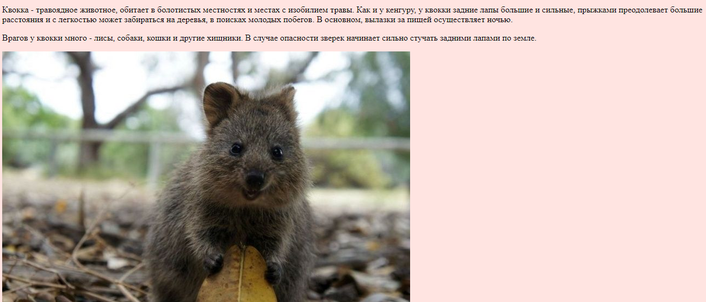

Лабораторные работы
студентки 1 курса группы МА
Вербицкой Елены
Главная страница
- Лекционные материалы:
- Мои конспекты
- Самостоятельная работа
- GIMP:
- Лабораторные работы
- Творческая контрольная работа
- HTML/CSS:
- Лабораторная работа 1
- Лабораторная работа 2
- Лабораторная работа 3
- Лабораторная работа 4
- Контрольная работа CSS
- JavaScript:
- Лабораторная работа 1
- Scratch:
- Примеры алгоритмов
- Adobe Flash:
- Анимация
- Работа с учениками:
- Блог "Математика от студентов ЮНПУ им. К. Д. Ушинского"
HTML/CSS: Лабораторная работа 1
Исходный текст страницы (HTML):

© Вербицкая Елена, 2018